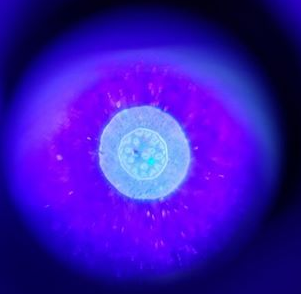

Little UV Magnifiers

On Amazon you can buy these "60x" magnifying lenses for around $6. If the quotations didn't tip you off, they are not 60x, we bought a couple different types and in general found them to be between 5x to 10x magnifying lenses with pretty intense spherical aberrations.
However if that was all there was to this, we wouldn't be writing about them. Some of these lenses come not just with a white LED, but also with a little UV LED, both aimed directly at the lenses field of view. Some models come prepared to clip onto your phone. So you can look at samples that show up in the UV on your phone using a cheap lens! Note that even though it doesn't say it anywhere, that second link with the phone clip also has a UV light.
Here's a quick picture I took with one of a stained Convallaria sample under UV. I also tried some labelled colloids but those were not as impressive. 
{kind=link}
We found that some more expensive little microscopes had significantly higher magnification, though still nowhere near what was advertised. Still, they are handy, and at $6 a pop your lunch yesterday may have cost more.
Thanks to Lael LaRanger, a school teacher in Connecticut for showing us these little gizmos!